Les exemples suivent deux personnes : Awa, qui envoie un fichier confidentiel, et Koffi, qui le reçoit. Remplacez ces prénoms par ceux de votre binôme. Toutes les captures viennent du site réel, pendant un vrai échange entre deux sessions de navigateur.
Un site web qui permet à deux personnes d'échanger des fichiers confidentiels : même si quelqu'un intercepte le fichier en route, il ne peut ni le lire, ni le modifier sans que cela se voie.
Koffi fabrique un cadenas, sa clé publique, qu'il peut distribuer à tout le monde. Il garde pour lui la seule clé capable de l'ouvrir, sa clé privée. Awa ferme le fichier avec le cadenas de Koffi. Une fois fermé, même Awa ne peut plus l'ouvrir : seul Koffi le peut.
Récupère la clé publique de Koffi, vérifie son empreinte, chiffre le fichier et envoie le fichier .rsaenc.
Crée sa paire de clés, partage sa clé publique, garde sa clé privée et déchiffre les fichiers reçus.
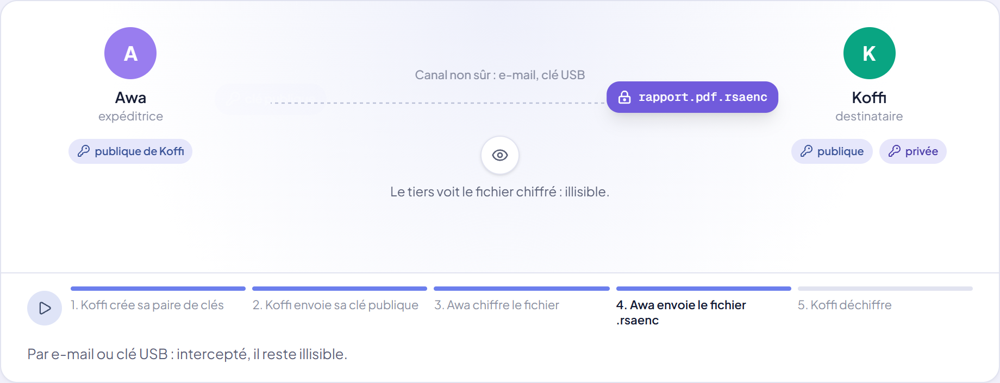
RSA ne peut chiffrer que quelques centaines d'octets à la fois. Le site utilise donc le chiffrement hybride, comme les outils professionnels :
Tous les calculs sont faits par votre navigateur. Aucun fichier, aucune clé et aucun mot de passe n'est envoyé sur Internet, pas même au serveur qui héberge le site.
Il faut Node.js 20 ou plus récent. Ouvrez un terminal dans le dossier du projet.
# Installer les dépendances (une seule fois) npm install # Lancer le site npm run dev
Le site s'ouvre à l'adresse http://localhost:5173. Pour l'héberger en ligne, npm run build produit un dossier dist/ à déposer sur n'importe quel hébergement statique en HTTPS (GitHub Pages par exemple).
L'API cryptographique du navigateur ne fonctionne qu'en HTTPS ou sur localhost. Ouvrir le fichier index.html directement ne suffit pas.
| Navigateur | Version | Remarque |
|---|---|---|
| Chrome, Edge | récente | Recommandés, testés. |
| Firefox | récente | Compatible. |
| Téléphone | Chrome, Safari | Interface adaptée, barre d'onglets en bas. |
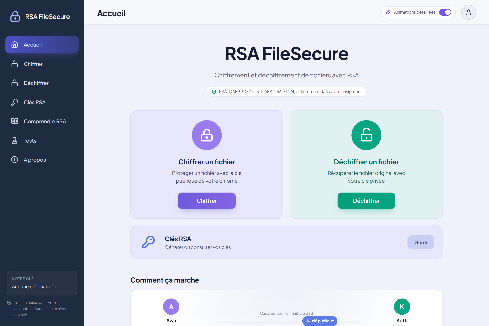
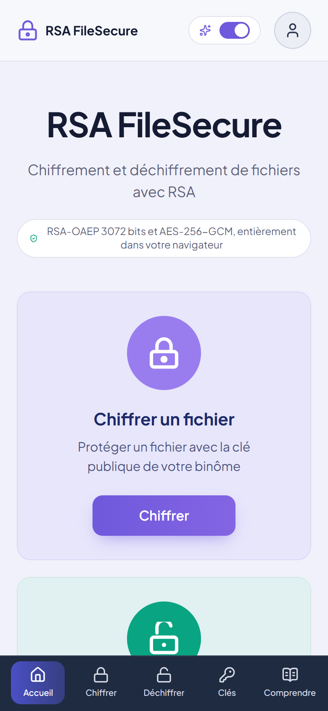
C'est la personne qui reçoit les fichiers qui crée la paire de clés. On ne le fait qu'une fois.
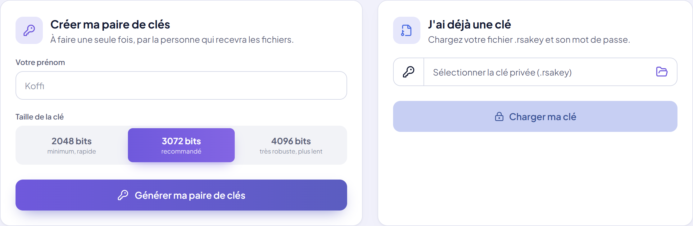
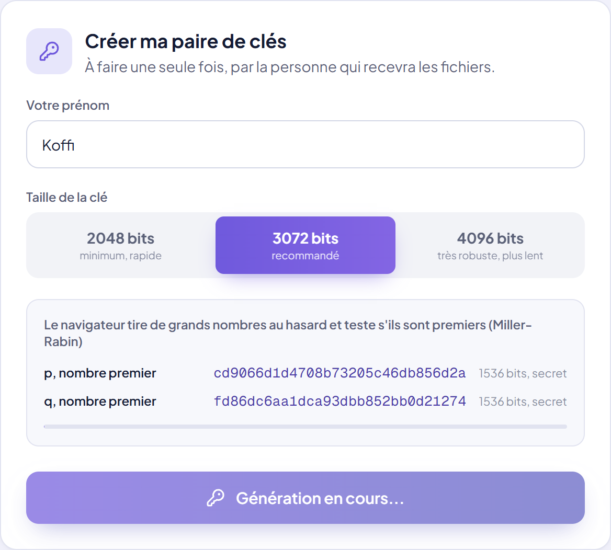
Quelques secondes plus tard, le site montre ce qui vient d'être calculé : les nombres premiers p et q, le module n = p × q, l'exposant public e = 65537 et l'exposant privé d. Les valeurs secrètes sont volontairement masquées. La paire se sépare ensuite en clé publique et clé privée.
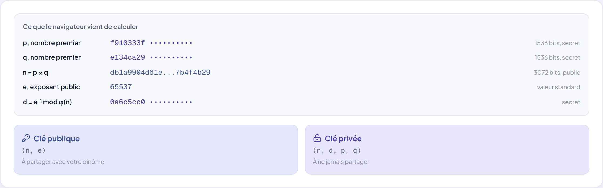
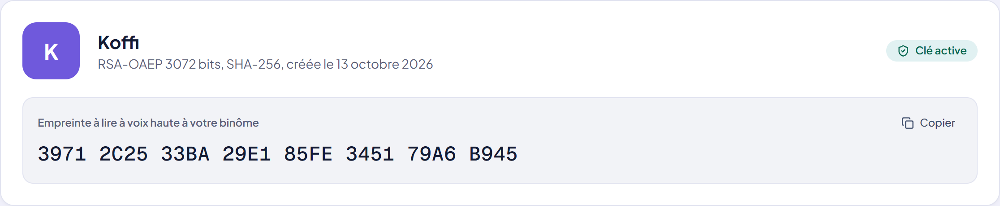
L'empreinte est un résumé SHA-256 de votre clé publique, en 8 groupes de 4 caractères. Elle sert à vérifier que votre binôme a bien reçu votre clé, et non une clé substituée en route.
Les deux clés se sauvegardent séparément, et ne suivent pas du tout le même chemin.
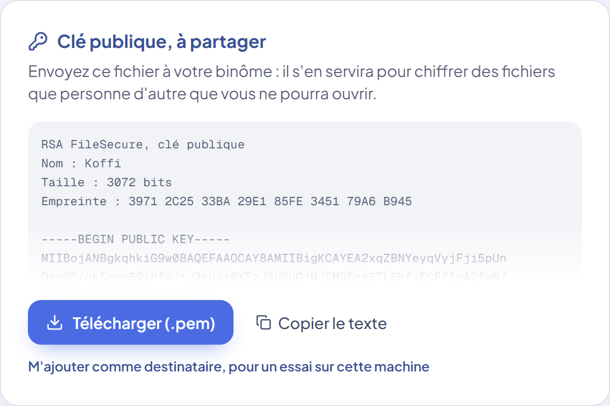
cle_publique_koffi.pem.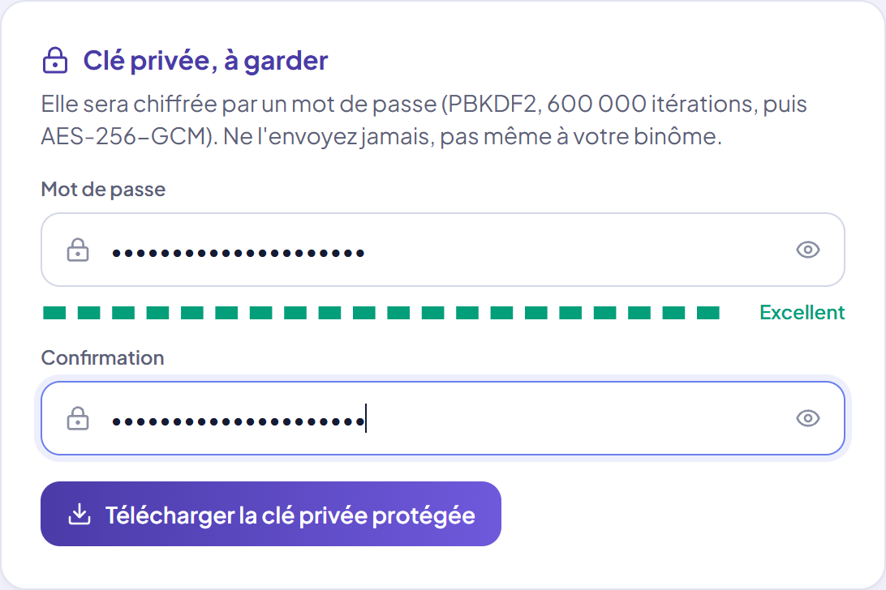
cle_privee_koffi.rsakey.Ni à Awa, ni à l'enseignant, ni à personne. Le fichier est chiffré par votre mot de passe (PBKDF2, 600 000 itérations, puis AES-256-GCM), mais la règle reste la même : la clé privée ne quitte jamais son propriétaire.
C'est voulu : la clé privée n'est jamais enregistrée dans le navigateur. Rechargez votre .rsakey à la visite suivante (chapitre 7). Sans ce fichier ou son mot de passe, les fichiers chiffrés pour vous sont perdus.
Avant de chiffrer quoi que ce soit, Awa doit avoir la clé publique de Koffi, et s'assurer que c'est bien la sienne.
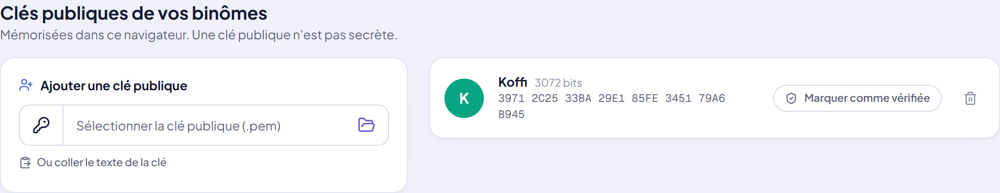
Une personne malveillante pourrait intercepter la clé publique et la remplacer par la sienne : elle pourrait alors lire tout ce qu'Awa chiffre. La parade est simple :
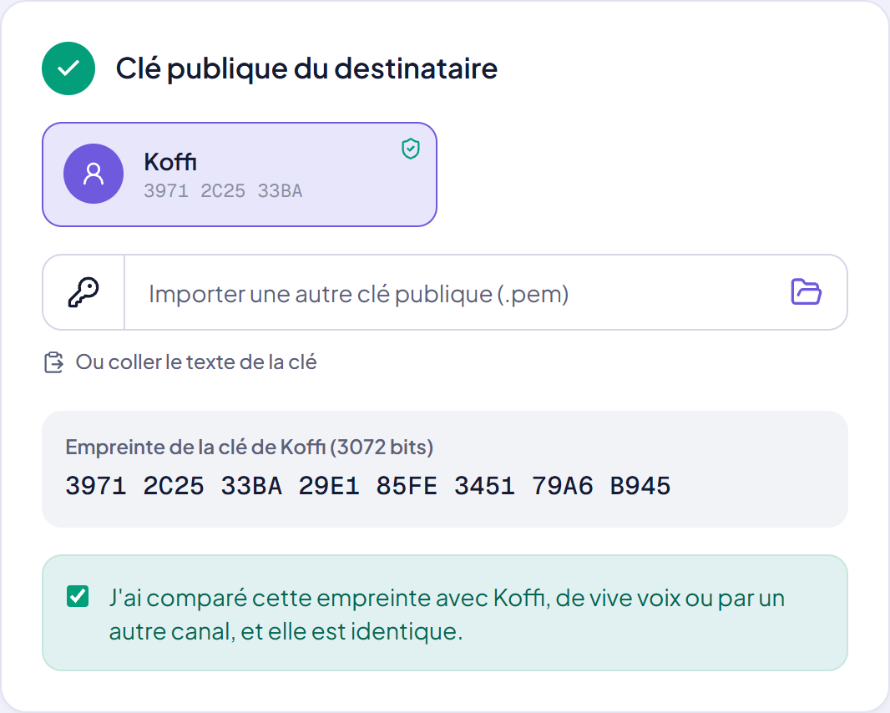
N'utilisez pas cette clé. Demandez à Koffi de vous la renvoyer, et supprimez l'ancienne avec l'icône de corbeille.
Tout type de fichier est accepté : PDF, image, document Word, archive, texte. La limite est de 100 Mo.
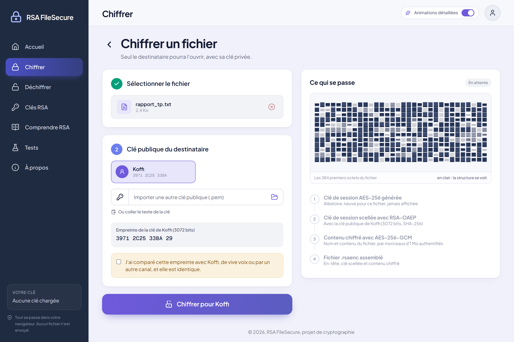
Le panneau Ce qui se passe montre les vraies étapes du calcul, dans leur ordre réel. La grille représente les 384 premiers octets du fichier : un front violet la balaie, et la structure du texte disparaît au profit d'un bruit uniforme.
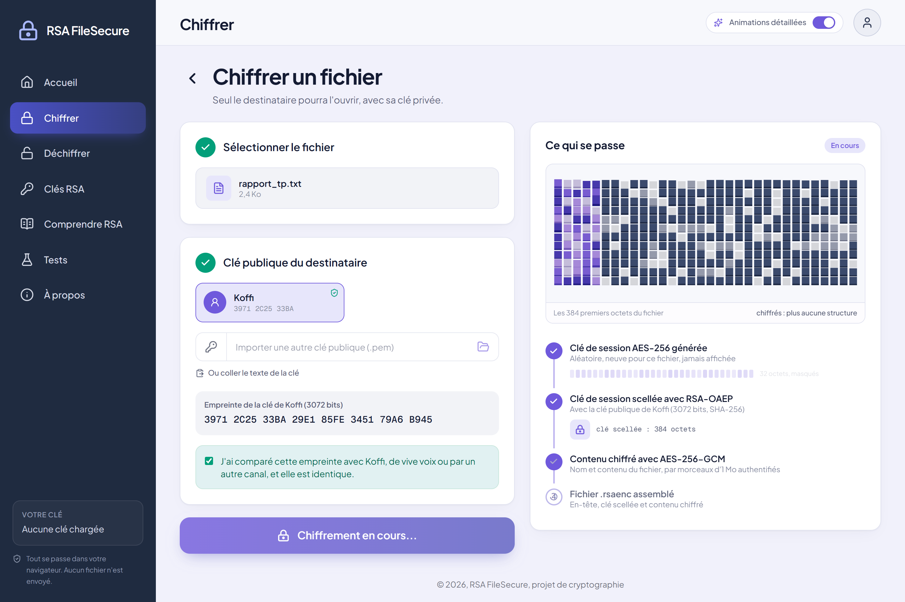
| Étape | Ce que fait le navigateur |
|---|---|
| 1. Clé de session | Tire au hasard une clé AES de 256 bits, neuve pour ce fichier. Elle n'est jamais affichée. |
| 2. Scellement | Chiffre cette clé avec RSA-OAEP et la clé publique de Koffi. |
| 3. Contenu | Chiffre le nom et le contenu du fichier avec AES-256-GCM, par morceaux d'1 Mo, chacun avec une étiquette d'intégrité. |
| 4. Assemblage | Réunit l'en-tête, la clé scellée et le contenu chiffré dans le fichier .rsaenc. |
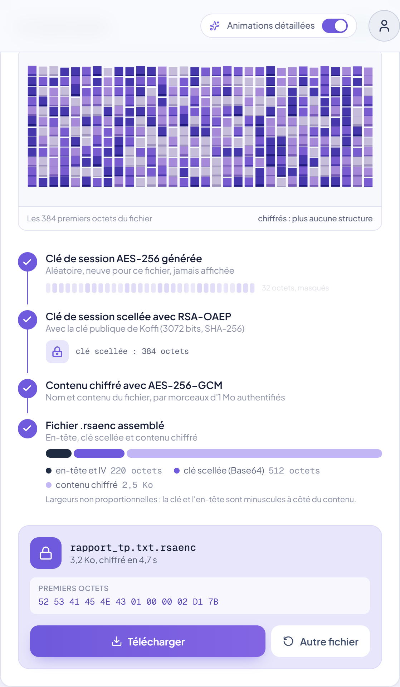
rapport_tp.txt.rsaenc, sa taille et la durée du chiffrement.52 53 41 45 4E 43, c'est-à-dire « RSAENC » : la signature du format.Le fichier .rsaenc peut transiter par n'importe quel moyen, même non sécurisé : sans la clé privée de Koffi, il est illisible.
Chiffrer deux fois le même fichier donne deux résultats différents, car la clé de session et le vecteur d'initialisation sont tirés au hasard à chaque fois.
Koffi a reçu rapport_tp.txt.rsaenc. Il lui faut ce fichier, sa clé privée et son mot de passe.
Si la clé a été créée pendant la même session, elle est déjà prête. Sinon, par exemple après avoir fermé l'onglet :
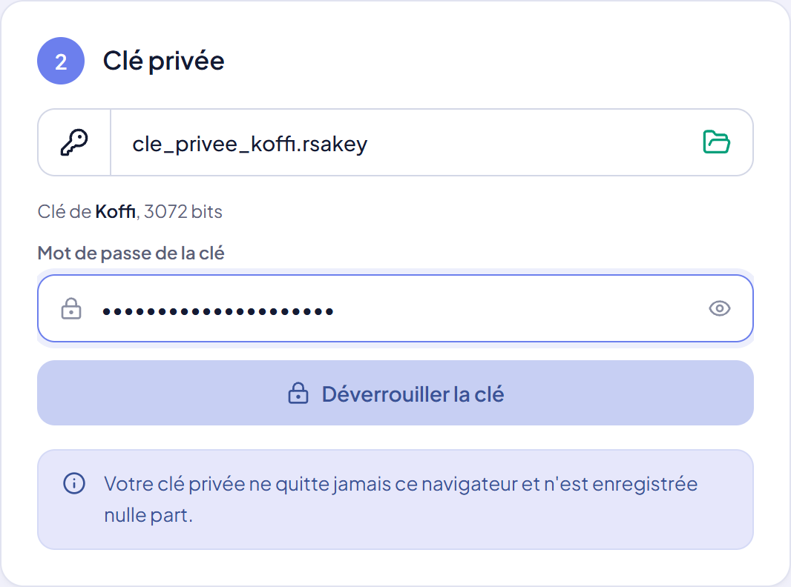
.rsakey..rsaenc dans la zone de l'étape 1.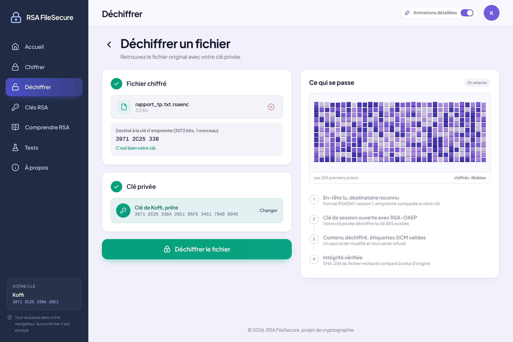
Le chemin inverse s'affiche, en vert : la grille passe du bruit violet à la structure du fichier d'origine.
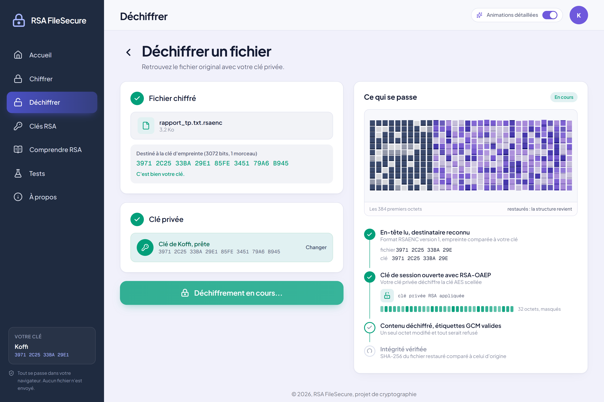
| Étape | Ce que fait le navigateur |
|---|---|
| 1. En-tête | Vérifie le format et compare l'empreinte du destinataire à votre clé. |
| 2. Clé de session | Votre clé privée déchiffre la clé AES scellée par RSA-OAEP. |
| 3. Contenu | AES-GCM déchiffre chaque morceau et contrôle son étiquette : un seul octet modifié et tout est refusé. |
| 4. Intégrité | Compare le SHA-256 du fichier restauré à celui d'origine, enregistré lors du chiffrement. |
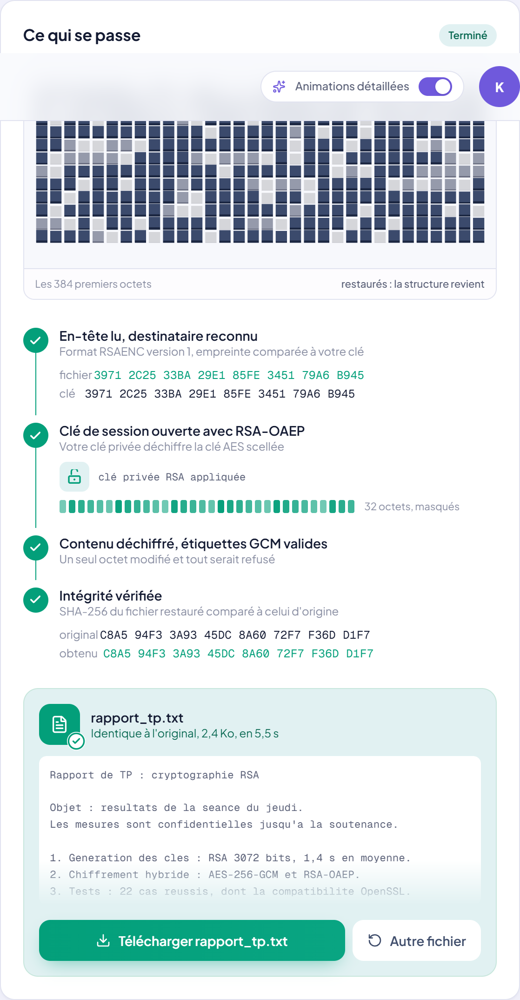
Le nom du fichier voyage à l'intérieur de la partie chiffrée : quelqu'un qui intercepte le .rsaenc ne le voit pas.
Le site refuse toujours plutôt que de rendre un fichier faux. Chaque refus est expliqué en clair.
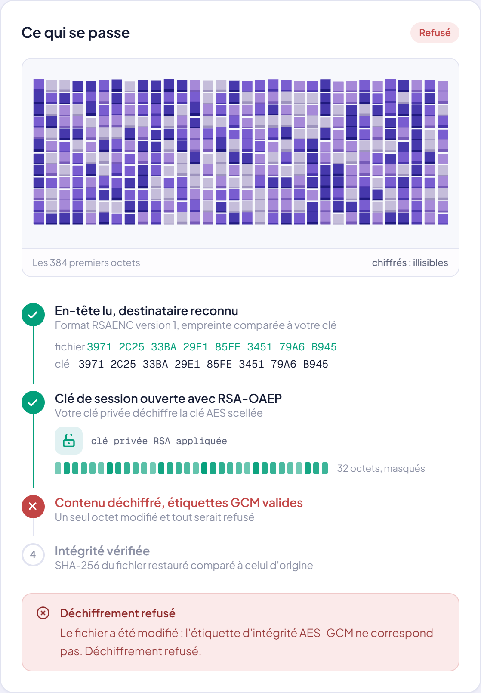
Sur cette capture, un octet du fichier .rsaenc a été modifié après le chiffrement. La clé de session s'ouvre normalement, mais l'étiquette d'intégrité AES-GCM ne correspond plus : l'étape passe en rouge et le déchiffrement est refusé.
Ce refus prouve que le chiffrement protège aussi l'intégrité, pas seulement la confidentialité.
| Message affiché | Cause | Que faire |
|---|---|---|
| Ce fichier ne contient pas de clé au format PEM. | Mauvais fichier choisi comme clé publique. | Choisissez le fichier .pem envoyé par votre binôme. |
| Ce fichier est une clé privée. Elle ne doit jamais être partagée. | Votre binôme vous a envoyé sa clé privée. | Supprimez-la et demandez la clé publique. Votre binôme doit créer une nouvelle paire. |
| Cette clé ne fait que 1024 bits. | Clé trop faible. | Demandez une clé de 2048 bits au moins. |
| Comparez d'abord l'empreinte, puis cochez la case. | Empreinte non vérifiée. | Comparez-la de vive voix avec votre binôme (chapitre 5). |
| Fichier trop volumineux : la limite est de 100 Mo. | Fichier trop gros. | Compressez-le ou découpez-le. |
| Mot de passe incorrect, ou fichier de clé endommagé. | Faute de frappe, ou mauvais fichier .rsakey. | Vérifiez les majuscules et réessayez. |
| Ce fichier n'est pas un fichier chiffré RSA FileSecure (.rsaenc). | Fichier original ou autre format. | Déposez le fichier .rsaenc reçu. |
| Ce fichier n'a pas été chiffré pour votre clé. | Fichier destiné à quelqu'un d'autre, ou chiffré avec une ancienne clé. | Demandez à l'expéditeur de chiffrer avec votre clé publique actuelle. |
| Le fichier a été modifié : l'étiquette d'intégrité AES-GCM ne correspond pas. | Fichier altéré ou abîmé pendant le transfert. | Demandez un nouvel envoi. |
| Le fichier chiffré est incomplet ou a été modifié. | Téléchargement interrompu ou fichier tronqué. | Demandez un nouvel envoi. |
| Aucune clé chargée après un rechargement de la page | Comportement normal : la clé privée n'est jamais enregistrée. | Rechargez votre .rsakey avec son mot de passe. |
Deux pages servent à expliquer et à prouver, devant l'enseignant, que le système fonctionne.
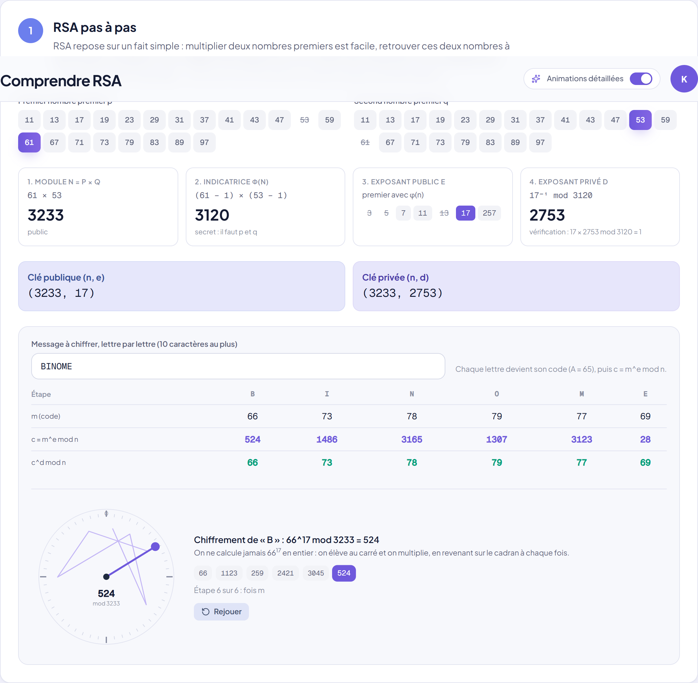
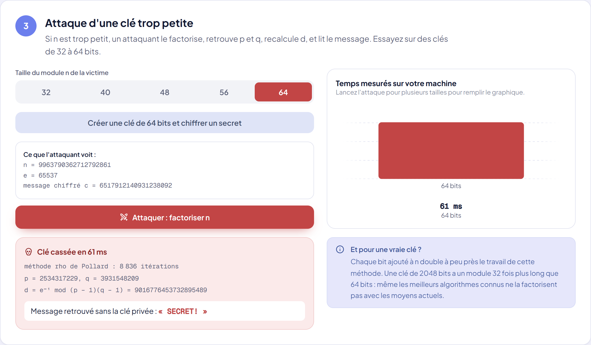
Cliquez sur Tout lancer : 19 vérifications s'exécutent sous vos yeux. Elles couvrent la génération des clés, les clés privées protégées, les fichiers vides ou en plusieurs morceaux, la modification d'un octet, la mauvaise clé, le fichier tronqué ou réordonné et le RSA « à la main ». Le même jeu de tests tourne aussi en ligne de commande avec npm test, avec trois tests de compatibilité avec OpenSSL en plus.
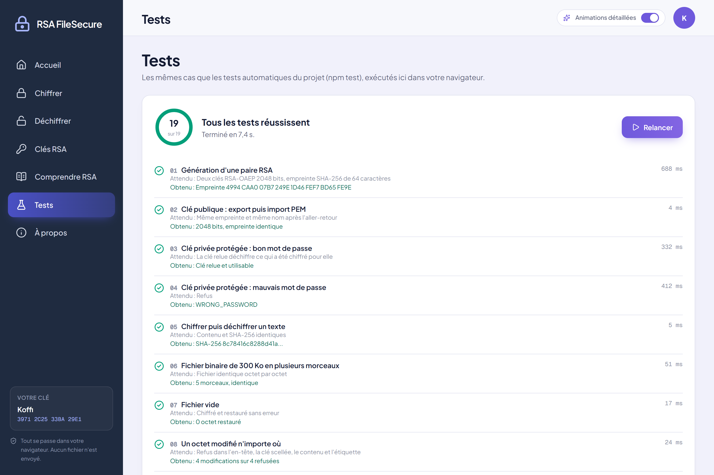
À répéter avant la soutenance, sur deux ordinateurs. Activez Animations détaillées.
| Temps | Qui | Action | Ce qu'on montre |
|---|---|---|---|
| 0:00 | Les deux | Page d'accueil et schéma « Comment ça marche ». | Les rôles et le principe du cadenas. |
| 0:45 | Koffi | Génère sa paire de clés en 3072 bits. | p, q, n, e, d calculés ; la paire se sépare. |
| 1:30 | Koffi | Télécharge la clé publique et l'envoie ; enregistre la clé privée protégée. | Seule la clé publique voyage. |
| 2:00 | Les deux | Lecture de l'empreinte à voix haute, Awa coche la vérification. | La parade à la substitution de clé. |
| 2:30 | Awa | Chiffre un PDF ou un texte pour Koffi. | Les 4 étapes et la grille qui devient du bruit. |
| 3:30 | Awa | Ouvre le .rsaenc dans le Bloc-notes, puis l'envoie. | Le contenu est illisible. |
| 4:00 | Koffi | Déchiffre le fichier. | Les SHA-256 identiques, le fichier s'ouvre. |
| 5:00 | Koffi | Tente de déchiffrer un fichier modifié d'un octet. | Le refus : l'intégrité est protégée. |
| 5:45 | Les deux | Comprendre RSA : attaque d'une clé de 64 bits. | Pourquoi 3072 bits. |
| 6:30 | Les deux | Page Tests, Tout lancer. | 19 tests au vert. |
Ouvrez une copie du .rsaenc dans un éditeur hexadécimal (HxD sous Windows), changez un seul caractère vers la fin du fichier, enregistrez, puis déposez cette copie dans Déchiffrer.
Dans Clés RSA, le lien M'ajouter comme destinataire permet de chiffrer pour soi-même, puis le bouton Le déchiffrer ouvre directement le résultat dans l'écran Déchiffrer.
« On chiffre avec la clé publique du destinataire, il déchiffre avec sa clé privée. Comme RSA ne chiffre que de petites données, il protège une clé AES, et c'est AES qui chiffre le fichier. »
Vérifier l'empreinte de chaque nouvelle clé publique par un autre canal.
Choisir un mot de passe long pour la clé privée.
Garder une copie du .rsakey sur un support sûr.
Utiliser 3072 bits.
Envoyer sa clé privée ou son mot de passe.
Utiliser une clé dont l'empreinte ne correspond pas.
Envoyer le fichier original en même temps que le .rsaenc.
Noter le mot de passe à côté du fichier de clé.
| Menace | Protection |
|---|---|
| Lecture du fichier intercepté | AES-256-GCM, clé AES scellée par RSA-OAEP |
| Modification, troncature ou réordonnancement | Étiquette GCM sur chaque morceau, en-tête authentifié, SHA-256 final |
| Clé publique remplacée par un tiers | Vérification de l'empreinte à voix haute |
| Vol du fichier de clé privée | Chiffrement par mot de passe : PBKDF2 SHA-256, 600 000 itérations |
| Factorisation de la clé RSA | 3072 bits par défaut, 2048 au minimum |
| Fuite du nom du fichier | Le nom est chiffré avec le contenu |
| Envoi de données à un serveur | Aucune requête réseau, politique de sécurité stricte |
Non. Ils utilisent les deux moitiés d'une même paire : la clé publique de Koffi pour chiffrer, sa clé privée pour déchiffrer. Pour que Koffi réponde à Awa, Awa crée sa propre paire et envoie sa clé publique à Koffi.
Non. Seule la clé privée de Koffi peut l'ouvrir. Awa garde évidemment son fichier original.
Les fichiers chiffrés pour cette clé deviennent irrécupérables. Créez une nouvelle paire et envoyez votre nouvelle clé publique.
Par sécurité, la clé privée n'est jamais enregistrée dans le navigateur. Rechargez votre fichier .rsakey. Les clés publiques de vos binômes, elles, sont mémorisées.
Non. Tout est calculé dans votre navigateur. Vous pouvez le vérifier dans l'onglet Réseau des outils de développement (touche F12) : aucune requête ne part pendant le chiffrement.
La clé de session AES et le vecteur d'initialisation sont tirés au hasard à chaque fois. C'est une protection : on ne peut pas savoir si deux fichiers chiffrés contiennent la même chose.
Oui pour la clé publique : le site lit le format PEM SPKI standard. Les tests automatiques le vérifient avec OpenSSL.
Il ralentit l'affichage pour qu'on puisse suivre et commenter chaque étape. Le calcul, lui, n'est jamais ralenti : l'affichage ne montre une étape terminée que si elle l'est réellement.
| Fichier | Créé par | Envoyé à | Contenu |
|---|---|---|---|
| cle_publique_koffi.pem | Koffi | Awa, ou n'importe qui | Clé publique RSA, format PEM SPKI. Non secret. |
| cle_privee_koffi.rsakey | Koffi | Personne | Clé privée PKCS#8 chiffrée par mot de passe. |
| rapport.pdf.rsaenc | Awa | Koffi | Fichier chiffré, illisible sans la clé privée. |
octets 0 à 5 "RSAENC" préfixe magique
octet 6 0x01 version du format
octets 7 à 10 L longueur de l'en-tête
L octets en-tête JSON algorithmes, empreinte du destinataire,
clé AES scellée, préfixe d'IV, morceaux
reste morceaux AES-GCM chacun suivi de son étiquette de 16 octets
| Chiffrement asymétrique | Système à deux clés : l'une chiffre, l'autre déchiffre. RSA en est l'exemple le plus connu. |
| Clé publique | Moitié partageable de la paire, qui sert à chiffrer pour son propriétaire. |
| Clé privée | Moitié secrète, la seule capable de déchiffrer. |
| RSA-OAEP | RSA avec un remplissage aléatoire qui rend chaque chiffrement unique et résiste aux attaques par oracle. |
| AES-256-GCM | Chiffrement symétrique rapide, qui ajoute une étiquette d'intégrité à chaque bloc chiffré. |
| Clé de session | Clé AES tirée au hasard pour un seul fichier, puis scellée par RSA. |
| Chiffrement hybride | Association d'AES pour le contenu et de RSA pour protéger la clé AES. |
| Empreinte | Résumé SHA-256 d'une clé publique, court et facile à comparer à voix haute. |
| SHA-256 | Fonction de hachage : un même fichier donne toujours la même empreinte, le moindre changement la modifie entièrement. |
| PBKDF2 | Fonction qui transforme un mot de passe en clé de chiffrement, volontairement lente pour freiner les essais. |
| PEM, SPKI, PKCS#8 | Formats standards d'échange de clés, lisibles par OpenSSL. |